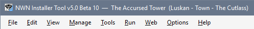
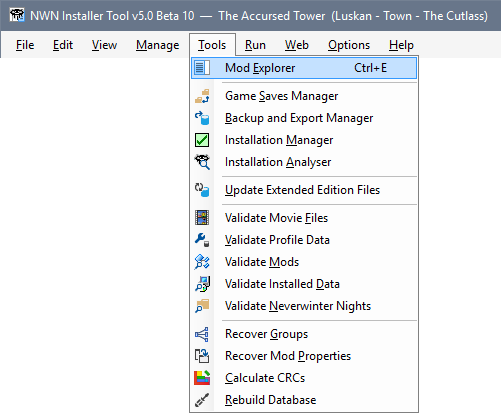
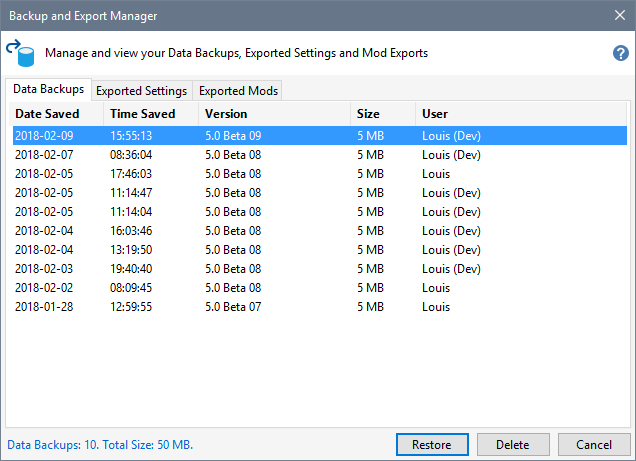

You can access the Menu Bar by pressing the Alt-Key, which underlines the letters you can use to access specific Menu items.



After pressing the Alt-Key, underlined letters in Installer Tool dialogues, such as the Game Saves Manager, remain underlined for the duration of your session. This is the standard behaviour that Windows applies to all dialogues.
Use Alt-Key shortcuts